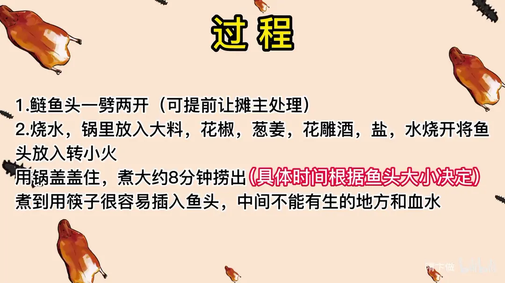
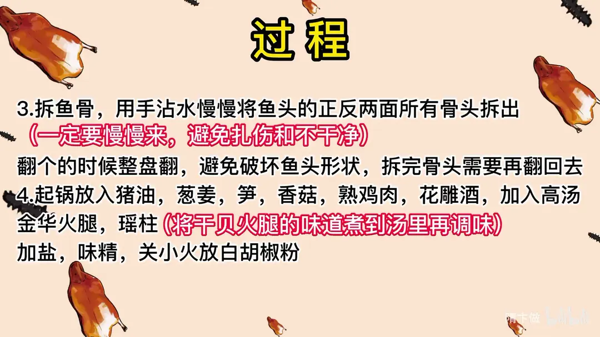
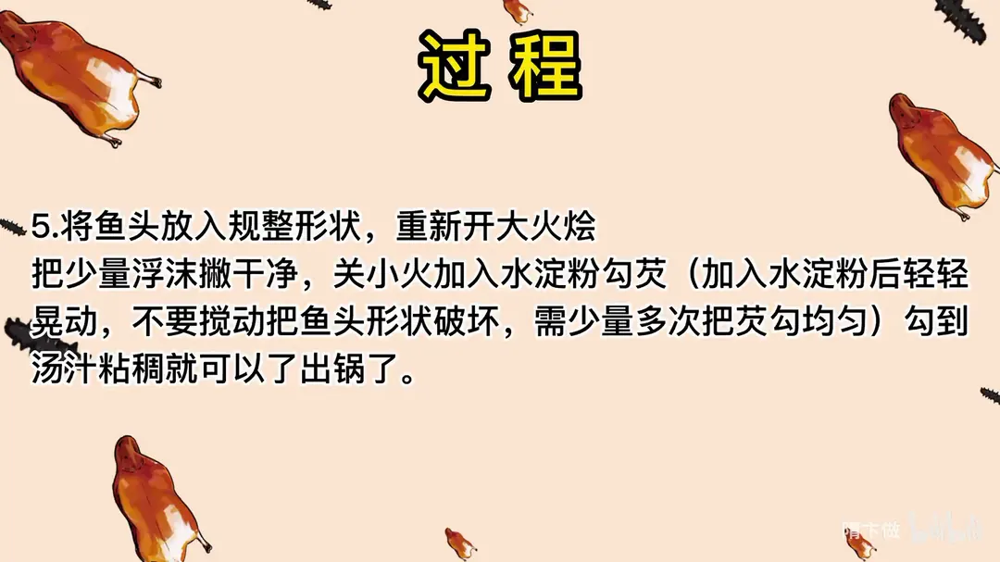

拆烩鲢鱼头
隋卞一做。六斤以上的花鲢鱼头先煮后拆骨，用手沾水把正反两面骨头一一拆出，再用猪油、高汤与火腿瑶柱同烩，小火少量多次勾芡，全程整盘翻动不破形。
原视频：https://www.bilibili.com/video/BV1sM411u7Vu
食材
花鲢鱼头、鲜笋、熟鸡肉 等 8 样
| 类别 | 用料 | 用量 |
|---|---|---|
| 主料 | 花鲢鱼头 | 6 斤以上 |
| 配料 | 鲜笋 | 适量 |
| 配料 | 熟鸡肉 | 适量 |
| 配料 | 香菇 | 适量 |
| 配料 | 火腿 | 适量 |
| 配料 | 瑶柱 | 适量 |
| 配料 | 干贝 | 适量 |
| 汤底 | 高汤 | 适量 |
步骤
- 劈鱼头：鲢鱼头一劈两开，可提前让摊主处理。
- 煮鱼头：烧水，锅里放入大料、花椒、葱姜、花雕酒、盐，水烧开将鱼头放入转小火，用锅盖盖住，煮大约 8 分钟捞出，具体时间根据鱼头大小决定；煮到用筷子很容易插入鱼头，中间不能有生的地方和血水。
- 拆鱼骨：用手沾水慢慢将鱼头的正反两面所有骨头拆出，一定要慢慢来，避免扎伤和不干净。
- 翻盘：翻个的时候整盘翻，避免破坏鱼头形状，拆完骨头需要再翻回去。
- 起锅调味：起锅放入猪油、葱姜、笋、香菇、熟鸡肉、花雕酒，加入高汤、金华火腿、瑶柱，将干贝火腿的味道煮到汤里再调味，加盐、味精，关小火放白胡椒粉。
- 勾芡：将鱼头放入规整形状，重新开大火烩，把少量浮沫撇干净，关小火加入水淀粉勾芡，加入水淀粉后轻轻晃动，不要搅动把鱼头形状破坏，需少量多次把芡勾均匀，勾到汤汁粘稠就可以了出锅。
讲解要点
难度：★★★★★（煮的火候、拆骨、圆锅打芡三大技巧，勾芡要分四五次、一次勾不匀）
为什么这么做
- 选六斤以上、品质好的花鲢头：品质差的鱼头一加热就只剩一层薄皮，胶质不足、一煮就没了，整个菜就撑不住。
- 先劈开再煮，只熟拆、不生拆：劈开才进得了味、拆得动（中间硬，建议让摊主帮忙）；生拆拆不干净，得先把鱼头煮到熟。
- 猪油起锅、酒和底味先下：鱼肉缺脂肪，猪油补上香味和润口，汤汁也才醇；水里和锅里的盐、葱姜、花椒、花雕酒去土腥味，同时给鱼头打底味。
- 手沾水拆骨、摸到扎手的地方才有刺：不戴手套是为了靠手感觉判断骨刺位置，摸到硬、扎手的地方就是刺，这样才拆得干净。
- 整盘翻面、翻回去：反复翻是为了拆正面够不着的那半边，一整盘翻才不会把鱼头弄散。
- 先煮高汤、火腿、瑶柱的味道，再调味放盐：干贝和火腿本身有盐分，先放盐会咸，等味道煮进汤里再调整才准。
- 白胡椒粉关小火时放：火大下粉容易结疙瘩，成「疙瘩汤」。
- 少量多次勾芡、只晃动不搅动：勾芡要分四回左右，边晃边让它均匀粘稠；搅动会把鱼头形状破坏，这是「烩」的要求。
- 圆锅打芡、整锅出：勾好芡直接整锅倒进盘里，是传统出勺手法；汁的浓度、分量和味道都要准。
容易翻车
- 拆骨是慢活，急不得，也别戴手套，容易扎手或不干净。
- 鱼脸保持完整，脸旁、眼皮下面的小刺最容易被忽略。
- 不要把鱼头拉出来单独勾芡再浇上去，那样装盘好看但味道差远了。
原片尾卡



原片文案
AI 字幕校准稿
有这么一道菜，需要把鱼头里边的鱼骨全部都拆出来，炖得软烂，还不能失去形状，这就是淮扬名菜拆烩鲢鱼头。鱼骨怎么拆？又怎么能做到软烂入味而不是散掉？今天的教程来了。准备好大鱼头，这东西山东叫花鲢，也叫胖头。要选用稍微品质好一点的，无论是花鲢、鳙鱼都行。如果买的是品质很次的，一加热一下水，就什么都不剩了，只剩一层很薄的皮，所以那种鱼头是不能用的，选料非常讲究。买完之后还是尽量让摊主给您劈了吧，中间不好劈，挺费劲的，我都劈半天，还扎手，注意安全。拆烩鲢鱼头是属于熟拆，生的拆是拆不干净的，所以第一步咱就先把它弄熟。我们先烧水，放大料、花椒、葱姜、花雕酒，里面放的所有东西都不用记，片尾全有。等水开了之后，把鱼头放进去，然后拿盆给它扣上。刚放进去的鱼头会立马就挺了，挺完之后再煮一会儿，慢慢就会软了，上面盖盖让它上下顺气，把上面那层表皮也给它煮熟。
至少得煮 8 分钟左右，烧开了之后就要关小火了，不能大火翻。煮到什么程度最好呢？拿筷子轻轻一扎，很容易就能插下去，一扒拉这前面的腮盖也很容易能取下来，就没有问题了，中间不能有生的地方，不能有血水。然后拿铲子把它兜起来捞出来，控一控汤。
接下来开始拆鱼骨，手沾点水，开始拆，一块两块三块。拿的时候就轻轻地往前推，把这皮撸下来就行了。咱们这个煮得比较透，如果煮得不透的话，这肉就很难往下拿。新手怎么知道哪个位置有刺？不能戴手套，就慢慢摸，鱼哪个位置硬、扎手，那就有刺；不扎手的地方肯定没有，这是鱼类的生理结构，你得了解才知道在哪拆。
下边这块不能在这边拆，得一会儿翻过来拆，它是两面拆，一面拆不完。靠这个鱼背这儿会有一排刺。是个慢活，得慢慢来。这个鱼脸上会有两块刺，就在脸旁边，眼皮下边儿，一摸就能摸得出来，这个很容易被忽略掉。这是鱼唇的部位，俩手得配合一下，一个手拿，一个手再摸点肉，别让它拽飞了。这块脸一定要保持完整。不用每一块骨头在哪儿都记，就摸着，有扎手的地方肯定就有刺，尽可能保持鱼的完整形状。
翻个了啊，翻过来。翻过来就是取鱼脊背这块肉，还有就是鱼鳃下边那个，在正面是拆不着也摸不到的。一定要手扶着那个肉，它就不容易散。靠脊背这块肉厚的地方，这是一块大肉，扒拉一下，底下可能会存留一根两根的，你可以用手细细地检查一遍。你看我说有吧，特别容易残留。行了，没有了。拆完之后我们还要把它翻回来。
这个菜比你们想象的要简单一些，在家里也不用非得弄得很规整，兑好这个汤往里一会，无论是咸鲜味、酸辣味、麻辣味、糖醋味都可以拆烩，它只是一个手法。
锅里边放点大油，一般猪油用着香，因为鱼肉里边缺少脂肪，所以要补一部分。再把香葱、姜放进去，笋、香菇、来一点熟的鸡肉，放点花雕酒，加入高汤、金华火腿、还有瑶柱。之前教大家做菜，什么高汤啊、火腿啊、瑶柱啊，能不用就不用了，因为教大家在家怎么做菜；但拆烩鲢鱼头在网上做的师傅也少，那么我尽可能按照师傅教我的原版来教。
这一段要后放盐，因为干贝、火腿都有盐分，所以要把这个味道煮到汤汁之后再调味，放十来粒味精就行了。白胡椒粉这时候要关小火再放，火大了容易做成疙瘩汤。
咱把鱼头放进去，规整规整也行，把脸露出来，再重新开大火。这会儿在锅里就叫烩了：保持锅里的汤汁滚开，让它慢慢都透到骨头里头，汤味慢慢渗入鱼肉当中，鱼肉的味道也跟汤味混为一体，就达到烩的目的了。把上面少量的沫子撇一下，关小火，开始勾芡。这个勾芡是个技术活，淀粉下去之后你得慢慢地晃动它，让淀粉完全地在汤汁里化开变粘稠，慢慢来的话你得勾个四回。这个不像炒菜勾得那么快，勾到粘糊糊的就行了。出锅，这就是拆烩鲢鱼头。
来尝尝师傅的拆烩鱼头。靠边缘的地方胶质感比较强一点，我感觉都夹不起来了，夹起来没有汤汁的那种粘稠感。这个口味好香，和我想象的一模一样：火腿的香，鸡汤的鲜，还有几种复合的味道，我觉得这个汤里都能吃到。
现在做这个菜的不太多了，反正我们出去探店，一直也没赶上过。还有刚才最后结尾的时候你看着，我拿勺子啪往盘子里一倒，这个动作会做的师傅也不多了。全网可能有师傅做过拆烩鲢鱼头，但是这种手法的屈指可数，一只手都用不了，这就是师傅教我的非常传统的手法：圆锅打芡，一锅出，直接就往盘里一抹，这也是出勺的一种方式，就像扒菜是一样的，要求勾芡的浓度、汁量还有味道的准确度都很高。还有一种做法是把鱼头搁锅里咕嘟咕嘟，时间很短，为了美观整齐，直接拉到盘里边勾芡往上一浇，这个叫拆烩，手法就不是很对了。烩一定是圆锅打芡、整锅出，没有分两步的。那种装盘可能比较好看，但是味道绝对赶不上这种。
这里面一点鱼的腥味都没有，就只有鱼的本味，加上高汤、笋、香菇、火腿，全都是提鲜的东西，鲜上加鲜。这个菜三大技巧：第一是拆的技巧，还有煮的火候是个技巧；第二汤味你可以自己调；第三就是圆锅打芡，你没有个十回八回，保证打不了这么均匀，最后出锅又是一个技巧。这一个菜涵盖了很多，希望大家伙都能学会。